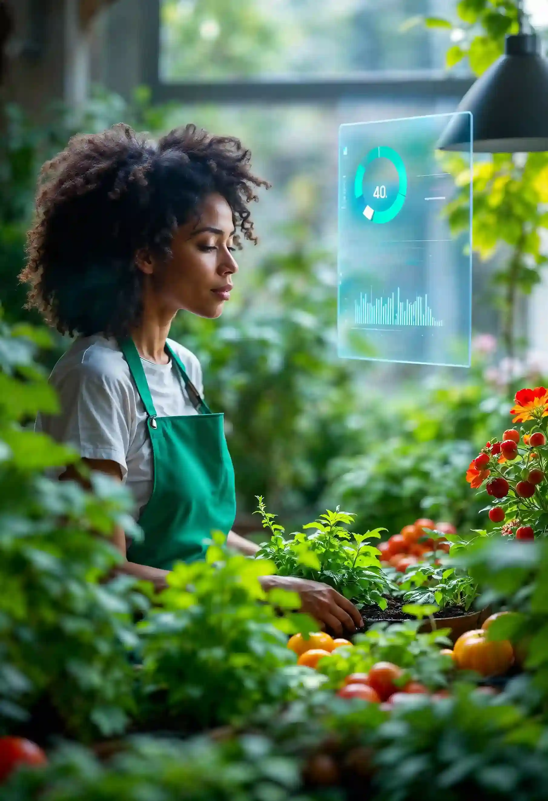
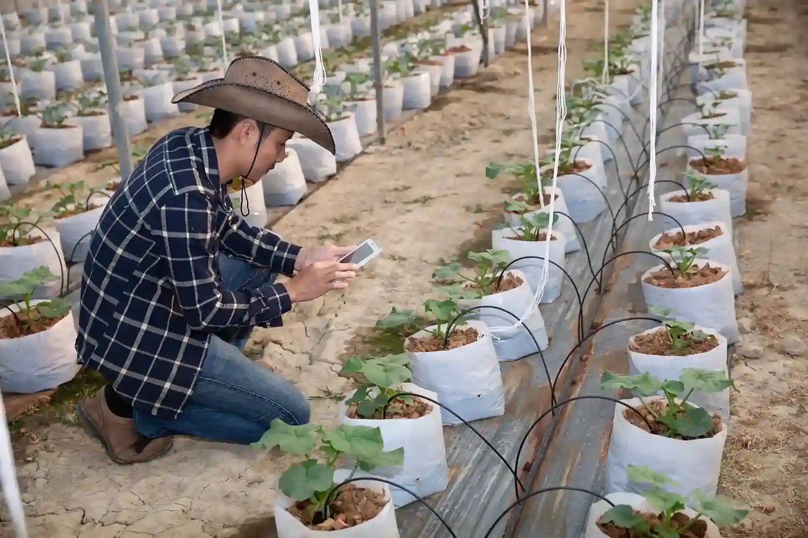
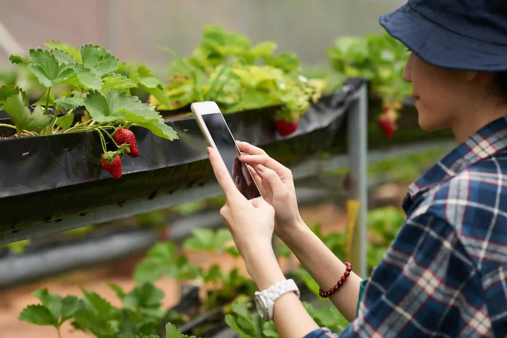
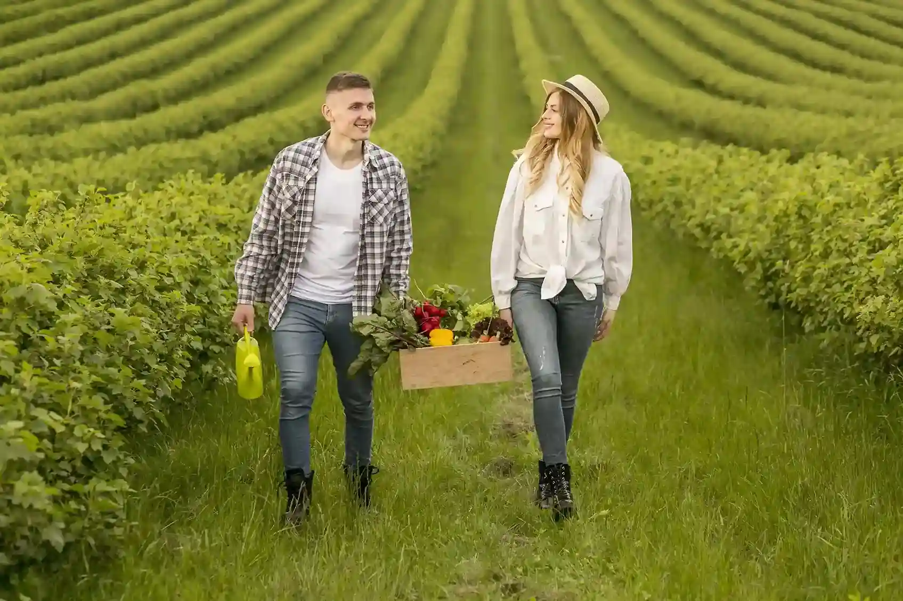
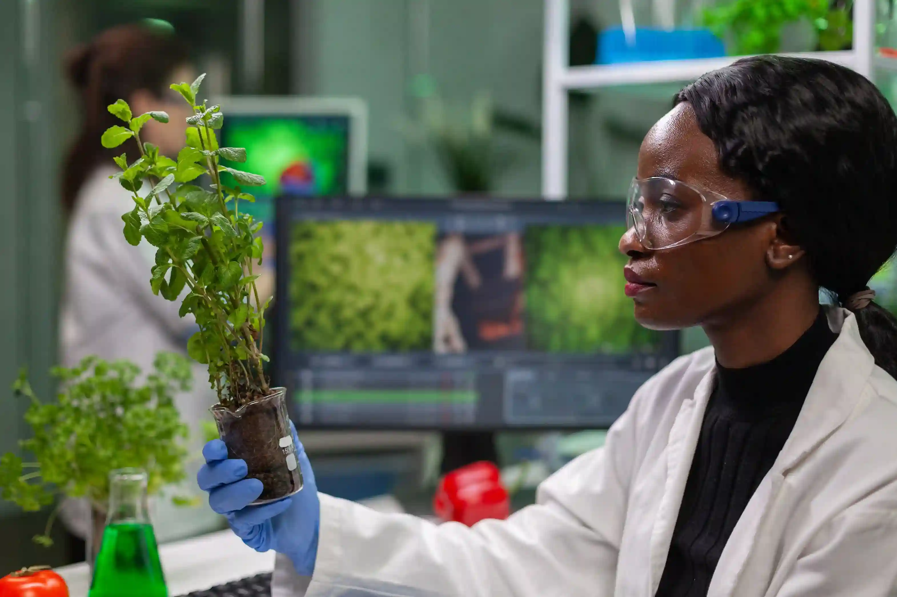

Smart Irrigation
Optimize water usage with intelligent irrigation systems and moisture monitoring.
Learn MoreEmpower farmers with smart technologies, sustainable practices, and precision farming to maximize productivity and efficiency.

We help farmers increase productivity through AI, precision agriculture, and sustainable practices.
Empowering farmers through innovation, sustainability, and data-driven agriculture.
Optimize water usage with intelligent irrigation systems and moisture monitoring.
Learn MoreImprove crop health with advanced soil nutrient assessment.
Learn MoreGPS-enabled farming for improved productivity and efficiency.
Learn MoreTrack crop health and detect diseases in real time.
Learn MoreLeverage predictive analytics for smarter agricultural decisions.
Learn MoreBuild a greener future through eco-friendly farming practices.
Learn MoreEmpowering farmers with AI-driven insights, precision agriculture, and sustainable farming solutions.
Detect diseases early and optimize crop health using AI.
Make informed decisions with real-time weather predictions.
Save water and improve efficiency automatically.
Track productivity and maximize yield through data insights.

We combine modern technology, sustainability, and expertise to transform the future of farming.
Harness advanced AgriTech solutions to improve productivity and efficiency.
Promote sustainable farming methods that protect natural resources and the environment.
Receive support from agriculture specialists and data-driven recommendations.
Explore how smart agriculture solutions are revolutionizing farming practices.



Discover how our smart agriculture solutions have transformed farming practices across regions.
AgriNova transformed our farming operations and increased crop productivity by over 30%.
_11zon.webp)
Smart irrigation systems reduced our water consumption while improving yield quality.

AI-powered crop monitoring helped us detect diseases early and improve farm efficiency.

Stay updated with trends, innovations, and sustainable practices shaping modern farming.

Discover how AI, IoT, and analytics are transforming farming and improving yields.
Read Article